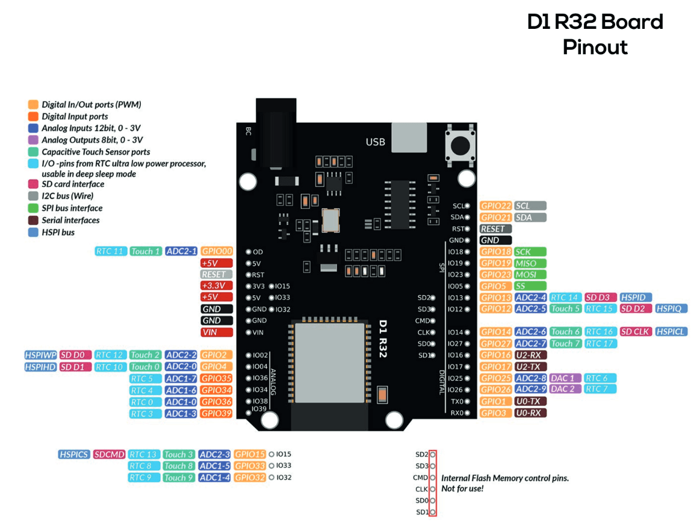

수업 개요 · 차시 계획
통신의 원리를 이론으로 다진 뒤(1~2차시), D1 R32 보드를 세팅하고 유선 시리얼로 데이터를 수집·시각화하고(3~4차시), 같은 보드로 WiFi 무선까지 확장한 다음(5차시), 나만의 IoT 장치를 구현합니다(6차시). 이후 심화로 값을 서버에 올려 누적하는 데 도전합니다. 제출용 보고서 서식은 별도 파일(중급_대체_보고서_제출서식.html)로 배포됩니다.
| 차시 | 주제 | 핵심 활동 |
|---|---|---|
| 1 | 통신이란? — 데이터가 오가는 원리 이론 | 신호·비트·바이트 · 직렬/병렬 · UART 프레임 |
| 2 | 통신 프로토콜과 유선·무선·네트워크 이론 | UART·I2C·SPI · 무선 비교 · WiFi·TCP/IP |
| 3 | D1 R32 세팅 & 유선 시리얼 통신 D1 R32 | ESP32 보드 세팅 · 시리얼 전송 · 데이터 형식 |
| 4 | Python으로 수집·저장·시각화 D1 R32 | pyserial · matplotlib · CSV 예제 #1 |
| 5 | WiFi 무선 통신 & 확장 확장 | WiFi 연결 · TCP 소켓 예제 #2·#3 |
| 6 | 산출물 — 나만의 IoT 장치 구현 | 설계 · 구현 · 시연 · 발표 |
| 심화 | 센서 데이터를 서버에 올리기 확장 | HTTP POST · API 키 · 원격 대시보드 누적(집에서 도전) |
| 서식 | 보고서 — 활동 계획서 & 수강 보고서 별도 파일 | 공식 제출 양식(별도 배포: 중급_대체_보고서_제출서식.html) |
- 보드 : Arduino D1 R32(ESP32 기반, WiFi 내장, UNO 폼팩터), micro-USB 케이블 — 유선·무선 실습 모두 이 한 보드로 진행
- 네트워크 : 노트북과 보드를 같은 WiFi 공유기에 연결(캠프용 공유기 SSID·비밀번호) — WiFi(5차시)에 필요
- 센서/부품 : 조도센서 모듈(저항 내장, 핀
VCC·GND·D0·A0), 점퍼선 (저항 별도 불필요) - PC 소프트웨어 : Arduino IDE(+ESP32 보드 패키지), Python 3 + pyserialmatplotlibpandas (WiFi 수신은 표준 socket 모듈)
통신이란? — 데이터가 오가는 원리 이론
- 통신의 3요소(송신자·수신자·매체)와 프로토콜(약속)의 개념을 설명할 수 있다.
- 데이터가 비트·바이트로 표현되고, 문자가 ASCII로 숫자화됨을 안다.
- 직렬/병렬, 동기/비동기 통신의 차이와 UART 프레임 구조를 이해한다.
1-1통신의 3요소와 프로토콜
통신(communication)은 보내는 쪽(송신자)이 매체(전선·전파)를 통해 받는 쪽(수신자)에게 정보를 전달하는 것입니다. 서로 올바르게 주고받으려면 “어떤 속도로, 어떤 순서로, 어떤 형식으로 보낼지”를 미리 약속해야 하는데, 이 약속을 프로토콜(protocol)이라고 합니다.
1-2데이터를 신호로 — 비트와 바이트
컴퓨터와 아두이노는 세상을 0과 1(전압 LOW/HIGH)로 다룹니다. 0 또는 1 하나가 비트(bit)이고, 비트 8개가 바이트(byte)입니다. 1바이트로는 0~255(28=256가지)를 표현합니다.
| 단위 | 크기 | 표현 범위 |
|---|---|---|
| 비트 (bit) | 0 또는 1 | 2가지 |
| 바이트 (byte) | 8비트 | 0 ~ 255 |
| 정수 (int, ESP32) | 4바이트(32비트) | 약 −21억 ~ 21억 |
'A'=65, 'a'=97, '0'(문자 0)=48. 전체 표는 부록 D.1-3직렬 통신 vs 병렬 통신
병렬(parallel)은 여러 선으로 동시에 보내 빠르지만 선이 많이 필요합니다. 직렬(serial)은 한 선으로 한 비트씩 차례대로 보내 느리지만 간단합니다. 아두이노–PC 통신, 대부분의 센서 통신은 직렬을 씁니다.
| 구분 | 직렬(Serial) | 병렬(Parallel) |
|---|---|---|
| 전송 방식 | 한 선으로 한 비트씩 | 여러 선으로 동시에 |
| 선의 수 | 적음(1~2개) | 많음(8개+) |
| 거리·비용 | 길게·싸게 가능 | 짧고 비쌈 |
| 예 | USB, 시리얼(UART), I2C, SPI | 옛 프린터 포트, 내부 버스 |
1-4동기 vs 비동기 · UART 프레임
직렬 통신은 “언제가 한 비트인지” 타이밍을 맞춰야 합니다. 동기식은 클럭(clock) 선으로 박자를 함께 보내고(I2C·SPI), 비동기식은 클럭 없이 미리 약속한 속도로 맞춥니다. 아두이노의 UART 시리얼이 비동기식이며, 약속한 속도가 보드레이트(baud rate)입니다. 9600이면 초당 약 9600비트입니다.
Serial.begin(...)과 모니터/파이썬 속도를 반드시 같게 맞추세요. (UNO는 보통 9600, ESP32(D1 R32)는 115200을 씁니다.)Serial.println(255)는 몇 바이트(문자)로 전송될까? ② 문자 '7'과 숫자 7은 통신에서 같은 값일까?통신 프로토콜과 유선·무선·네트워크 이론
- UART·I2C·SPI의 특징과 “언제 쓰는지”를 구분할 수 있다.
- 무선 기술(WiFi·BLE·Zigbee·LoRa·NFC)의 트레이드오프를 설명할 수 있다.
- WiFi 네트워크에서 IP 주소·포트·TCP 소켓·클라이언트/서버 개념을 이해한다.
2-1아두이노의 3대 통신 프로토콜
| 방식 | 선(핀) | 동기 | 특징 | 주로 쓰는 곳 |
|---|---|---|---|---|
| UART (시리얼) | TX, RX (+GND) | 비동기 | 1:1, 간단, 보드레이트 약속 | 아두이노 ↔ PC(USB) |
| I2C | SDA, SCL (2선) | 동기 | 한 버스에 여러 센서(주소로 구분) | 온습도·조도·기압 등 |
| SPI | MOSI, MISO, SCK, SS (4선) | 동기 | 매우 빠름, 선 많음 | 디스플레이·SD카드 |
2-2무선 통신 기술 비교
거리·속도·전력은 서로 맞바꾸는 관계입니다. 이 대체 교재는 그중 WiFi를 사용합니다.
| 기술 | 거리(대략) | 속도 | 전력 | 대표 용도 |
|---|---|---|---|---|
| WiFi | 수십 m+ | 높음 | 높음 | 인터넷 연결, 영상·대용량 이 교재 |
| BLE | ~10 m | 낮음 | 매우 낮음 | 웨어러블·센서(기본 교재) |
| Zigbee | ~10–100 m | 낮음 | 낮음 | 스마트홈 메시 |
| LoRa | 수 km | 매우 낮음 | 초저전력 | 광역·환경 센서 |
| NFC | ~수 cm | 낮음 | 낮음 | 태그·결제 |
2-3WiFi와 네트워크 기초 — IP·포트·TCP
WiFi로 통신하려면 두 장치가 같은 공유기(네트워크)에 연결되어야 합니다. 네트워크에 연결되면 각 장치는 IP 주소(예: 192.168.0.10)를 받습니다. 한 장치 안에서도 프로그램마다 창구를 구분하는 포트(port) 번호(예: 5000)를 씁니다.
- TCP : 데이터를 순서대로·빠짐없이 전달하도록 보장하는 신뢰성 있는 연결형 통신.
- 소켓(socket) : 두 프로그램이 데이터를 주고받는 “통신 창구(끝점)”.
- 서버(server) : 연결을 기다리는 쪽 — 여기선 D1 R32(포트 5000을 엶).
- 클라이언트(client) : 먼저 접속하는 쪽 — 여기선 PC의 파이썬.
D1 R32 세팅 & 유선 시리얼 통신 D1 R32
- Arduino D1 R32(ESP32)를 IDE에 세팅하고 포트·보드레이트(115200)를 맞출 수 있다.
- 센서 값을 일정 주기로 시리얼로 전송하고 모니터·플로터로 확인할 수 있다.
- 여러 값을 한 줄(CSV 형식)로 보내는 데이터 형식을 설계할 수 있다.
3-1데이터 수집의 전체 흐름
3-2⚙️ Arduino D1 R32(ESP32) 세팅 — 제일 먼저!
이 교재는 D1 R32 한 보드로 유선(시리얼)과 무선(WiFi)을 모두 합니다. 먼저 ESP32 보드 패키지를 설치합니다.
- 파일 → 환경설정 → 추가 보드 매니저 URLs에 추가:
https://espressif.github.io/arduino-esp32/package_esp32_index.json - 도구 → 보드 → 보드 매니저에서 “esp32”(by Espressif Systems) 설치.
- 도구 → 보드 → ESP32 Arduino → WEMOS D1 R32 선택. (목록에 없으면 “ESP32 Dev Module”로도 동작)
- micro-USB로 D1 R32를 PC에 연결. USB 칩이 CH340이면 CH340 드라이버 설치.
📥 CH340 드라이버 내려받기 : Google Drive 링크 - 도구 → 포트에서 새로 생긴 COM 포트를 선택한다.
- 도구 → Upload Speed를 115200으로 설정한다. (기본값 921600은 일부 보드·케이블에서 업로드가 실패합니다)
- 업로드가 안 되면 보드의 BOOT 버튼을 누른 채 업로드해 본다(일부 보드).
- Upload Speed(도구 메뉴) = 스케치를 업로드할 때 속도 → 115200 권장. 안 맞으면 업로드 자체가 실패합니다.
- Serial 통신 속도(코드의
Serial.begin(115200)= 시리얼 모니터 속도) = 값을 주고받을 때 속도 → 모니터도 115200. 안 맞으면 글자가 깨져 보입니다.
analogReadResolution(12)를 씁니다.📌 D1 R32 핀맵 (참고)
배선 전에 핀 위치를 확인하세요. 이 실습에서 쓰는 핀은 3V3(전원)·GND(접지)·IO34(아날로그 입력)입니다.

3-3🧪 실습 — 조도 값을 PC로 보내기
조도센서 모듈(저항 내장, 핀 4개 VCC·GND·D0·A0)을 연결합니다. VCC→3V3, GND→GND, A0→IO34로 잇고, D0는 쓰지 않습니다. (모듈에 저항이 들어 있어 별도 1kΩ이 필요 없습니다.)
// example_01.inovoid setup() { Serial.begin(115200); analogReadResolution(12); // ESP32 ADC 12비트(0~4095)}void loop() { int light = analogRead(34); // 조도센서(IO34) Serial.println(light); // 값 + 줄바꿈 delay(500);}- n비트 ADC는 2n단계로 나눕니다.
- ESP32(D1 R32)는 12비트 → 212 = 4096단계 → 값 범위 0 ~ 4095.
- 참고로 아두이노 UNO는 10비트(210=1024 → 0~1023)라 더 거칩니다. 비트가 클수록 같은 전압을 더 촘촘히 구분합니다.
analogReadResolution(12)는 읽기 해상도를 12비트로 정하는 것입니다(ESP32 기본값도 12비트라 명시해 두는 셈). 값을 실제 전압으로 바꾸려면 전압 = 값 ÷ 4095 × 3.3V로 계산합니다 — 예: 값 2048 ≈ 1.65V(절반).
3-4🔎 심화 — 여러 값을 한 줄로 (CSV 형식)
여러 센서 값을 쉼표로 이어 한 줄로 보내면 PC가 나누기 쉽습니다. 이것이 CSV 형식입니다.
// example_02.inovoid setup() { Serial.begin(115200); analogReadResolution(12);}void loop() { int light = analogRead(34); // 조도센서(IO34) int light2 = analogRead(39); // 두 번째 센서(IO39) Serial.print(light); Serial.print(","); // 구분자 Serial.println(light2); // 줄바꿈 delay(500);}delay로 주기를 바꿔 보고, 값 앞에 Serial.print("light,")로 이름표를 붙여 보기.Python으로 데이터 수집·저장·시각화 D1 R32
pyserial로 아두이노가 보낸 값을 PC에서 읽을 수 있다.matplotlib으로 그래프를,pandas로 CSV 저장을 할 수 있다.- 수집 개수·주기 등 파라미터를 바꿔 나만의 로거를 만들 수 있다.
pip install pyserial pandas matplotlib- ⚠️ 시리얼 통신 패키지는 pyserial 입니다.
pip install serial은 다른(잘못된) 패키지라서, 실행하면module 'serial' has no attribute 'Serial'오류가 납니다. - 설치할 이름은
pyserial, 코드에서 쓰는 것은import serial— 이름이 달라도 정상입니다. - 이미
pip install serial을 했다면:pip uninstall -y serial로 지우고pip install pyserial로 다시 설치하세요. - 확인:
python -c "import serial; print(serial.__version__)"→ 버전 숫자가 뜨면 성공.
4-1파이썬으로 값 읽기
아두이노 IDE의 시리얼 모니터는 닫아 두어야 파이썬이 포트를 쓸 수 있습니다.
# example_01a.pyimport serialser = serial.Serial('COM3', 115200) # 포트·속도는 아두이노와 동일(ESP32=115200)while True: line = ser.readline().decode().strip() if line.isdigit(): print(int(line))- 파이썬 실행 전 → 아두이노 시리얼 모니터/플로터를 닫기.
- 시리얼 모니터를 열기 전 → 파이썬을 완전히 종료(실행 중이면 Ctrl+C 또는 정지 버튼).
- 코드는
with serial.Serial(...)로 감싸 끝나면 포트를 자동 반납하게 합니다(아래 예제 적용). - 그래도 둘 다 멈추면 → 보드 USB를 뽑았다 다시 꽂아 포트를 초기화하세요.
4-2실시간 그래프 + CSV 저장
🛠 예제 #1 · 유선 데이터 로거 (D1 R32 → CSV·그래프)
수정 가능 예제 #1 D1 R32Serial.println(light) — 값 한 개만 전송)과 짝입니다. 그래서 파이썬도 line.isdigit()로 값 한 개를 읽습니다. 만약 실습코드 #01+처럼 조도,값2를 CSV로 보낸다면, 파이썬에서 line.split(',')로 나눠 받아야 합니다.# example_01b.pyimport serial, datetimeimport pandas as pdimport matplotlib.pyplot as pltPORT = 'COM3' # ← 내 포트로 수정DATA_LIMIT = 100 # ← 모을 데이터 개수values, times = [], []with serial.Serial(PORT, 115200, timeout=1) as ser: # with: 끝나면 포트를 자동 반납 while len(values) < DATA_LIMIT: try: line = ser.readline().decode().strip() if line.isdigit(): v = int(line) now = datetime.datetime.now().strftime("%H:%M:%S") values.append(v); times.append(now) print(len(values), now, v) except: pass# with 블록을 벗어나면 포트가 닫혀 시리얼 모니터를 다시 쓸 수 있음pd.DataFrame({'시간': times, '데이터': values}).to_csv('light_log.csv', index=False, encoding='utf-8-sig')plt.plot(values); plt.ylabel('light'); plt.show()- 수집 개수·주기 :
DATA_LIMIT과 아두이노delay를 조절. - 다른 센서 : 아두이노에서 온도/거리 값을 보내고
ylabel을 바꾸기. - 여러 값 동시 : 아두이노에서 CSV로 보내고 파이썬
line.split(',')로 나누기.
light_log.csv(시간·데이터 두 열)를 열어 평균·최댓값을 구하고, 어느 시간대에 값이 컸는지 살펴보기. 예: df['데이터'].mean(), df['데이터'].max() / 최댓값이 나온 시각은 df.loc[df['데이터'].idxmax(), '시간'].WiFi 무선 통신 & 확장 D1 R32
- (3차시에서 이미 세팅한) D1 R32를 WiFi에 연결하고 IP를 확인할 수 있다.
- D1 R32를 TCP 서버로 만들어 센서 값을 내보낼 수 있다.
- 파이썬
socket으로 접속해 값을 무선 수신·저장·시각화할 수 있다.
5-1같은 D1 R32, 이번엔 WiFi로
3차시에서 세팅·배선한 바로 그 D1 R32를 그대로 씁니다. ESP32에는 WiFi가 내장되어 있어, 유선(USB)으로 보내던 값을 이제 무선으로 보낼 수 있습니다. 보드 세팅·조도 배선(3V3·IO34)은 3차시 그대로이니 새로 할 것이 없습니다.
Failed uploading: ... exit status 1 오류 시 보드의 BOOT 버튼을 누른 채 업로드, CH340 드라이버 재설치, 케이블/포트 재확인, 업로드 속도 낮추기(921600→115200)를 시도합니다.5-2🧪 D1 R32 — WiFi 연결 & IP 확인
먼저 공유기에 연결해 내 보드의 IP 주소를 시리얼 모니터로 확인합니다. 이 IP를 파이썬에 입력하게 됩니다.
// example_03.ino#include <WiFi.h>const char* ssid = "iotcamp"; // ← 공유기 이름(SSID)const char* password = "********"; // ← 공유기 비밀번호void setup() { Serial.begin(115200); WiFi.begin(ssid, password); while (WiFi.status() != WL_CONNECTED) { delay(500); Serial.print("."); } Serial.println("\nWiFi 연결됨"); Serial.print("IP 주소: "); Serial.println(WiFi.localIP()); // ← 이 IP를 파이썬에 입력!}void loop() {}IP 주소: 192.168.0.10처럼 표시됩니다. 이 숫자를 기록해 두세요.5-3🧪 WiFi로 센서 값 보내기 (TCP 서버) — 예제 #2
D1 R32를 TCP 서버(포트 5000)로 만들어 접속한 PC에 조도 값을 계속 보냅니다.
🛠 예제 #2 · WiFi 무선 조도 센서 (D1 R32 → TCP → PC)
수정 가능 예제 #2 WiFi// example_04.ino#include <WiFi.h>const char* ssid = "iotcamp";const char* password = "********";WiFiServer server(5000); // 포트 5000으로 서버 열기WiFiClient client;void setup() { Serial.begin(115200); analogReadResolution(12); // ESP32 ADC 12비트(0~4095) WiFi.begin(ssid, password); while (WiFi.status() != WL_CONNECTED) { delay(500); } Serial.print("IP: "); Serial.println(WiFi.localIP()); server.begin();}void loop() { if (!client || !client.connected()) { client = server.available(); // PC 접속 대기 return; } int light = analogRead(34); // 조도센서(IO34) client.println(light); // 값 + 줄바꿈을 WiFi로 전송 delay(500);}# example_04a.pyimport socketHOST = '192.168.0.10' # ← 시리얼에 뜬 D1 R32의 IPPORT = 5000with socket.socket(socket.AF_INET, socket.SOCK_STREAM) as s: # with: 끝나면 소켓 자동 반납 s.connect((HOST, PORT)) # 서버(D1 R32)에 접속 while True: chunk = s.recv(1024) # 원본 바이트 if not chunk: # 빈 바이트 = 연결 종료 break data = chunk.decode().strip() if data: # 개행만 온 조각(빈 줄)은 건너뛰기 print(data)with socket.socket(...) as s:로 감쌌습니다 → Ctrl+C로 멈춰도 소켓이 자동 반납되어 보드(단일 접속 서버)에 바로 다시 접속할 수 있습니다. with 없이 강제 종료하면 이전 연결이 남아 다음 실행 때 접속이 안 될 수 있어요.- 다른 센서 : IO34에 온도·소리·물 센서를 연결해 무선 전송.
- 여러 값 :
client.println(String(t)+","+String(h))로 CSV 한 줄 전송 → 파이썬에서split(','). - 전송 주기 : 아두이노
delay로 조절. - 포트 번호 : 5000 대신 다른 번호로 바꿔도 됨(양쪽 동일하게).
5-4WiFi 실시간 수집·시각화·CSV — 예제 #3
받은 값을 모아 그래프로 그리고 CSV로 저장합니다. WiFi(TCP)는 데이터가 덩어리로 도착할 수 있으므로, 줄바꿈(\n) 기준으로 잘라 한 줄씩 처리합니다.
🛠 예제 #3 · WiFi 데이터 로거 (D1 R32 → 실시간 그래프·CSV)
수정 가능 예제 #3 WiFi아두이노는 예제 #2와 동일합니다(TCP 서버로 값 전송). 파이썬만 수집·시각화·저장까지 확장합니다.
client.println(light))를 그대로 씁니다. 아두이노는 새로 올릴 것이 없고, 파이썬만 수집·시각화·저장까지 확장합니다.# example_04b.pyimport socket, datetimeimport pandas as pdimport matplotlib.pyplot as pltHOST = '192.168.0.10' # ← D1 R32의 IPPORT = 5000; DATA_LIMIT = 100buf = ''; values, times = [], []with socket.socket(socket.AF_INET, socket.SOCK_STREAM) as s: # with: 끝나면 소켓 자동 반납 s.connect((HOST, PORT)) while len(values) < DATA_LIMIT: buf += s.recv(1024).decode(errors='ignore') while '\n' in buf: # 줄 단위로 잘라 처리 line, buf = buf.split('\n', 1) line = line.strip() if line.isdigit(): v = int(line) now = datetime.datetime.now().strftime("%H:%M:%S") values.append(v); times.append(now) print(len(values), v)pd.DataFrame({'시간': times, '데이터': values}).to_csv('wifi_log.csv', index=False, encoding='utf-8-sig')plt.plot(values); plt.ylabel('light'); plt.show()- 수집 개수·주기 :
DATA_LIMIT과 아두이노delay를 조절. - 여러 값 : CSV 한 줄을
line.split(',')로 나눠 여러 열로 저장. - 원격 관측 : 보드를 창가·화분 옆에 두고 노트북에서 멀리서 값 확인.
센서 데이터를 서버에 올려 누적하기 WiFi
- ESP32가 서버로 값을 보내는(HTTP POST) 원리를 이해한다.
- 대시보드에 회원가입·로그인하고 내 API 키로 데이터를 올릴 수 있다.
- 누적된 데이터를 기간·집계 단위로 조회하고 CSV로 내보낼 수 있다.
S-1왜 서버에 올릴까 — PC 로거 vs 서버 누적
| 구분 | 예제 #3 (내 PC) | 서버 누적 (이 챕터) |
|---|---|---|
| 켜 둘 것 | 내 PC가 계속 켜져 있어야 | 보드만 켜두면 됨(서버는 항상 가동) |
| 보는 곳 | 내 PC 앞에서만 | 어디서나 로그인 → 내 데이터 |
| 여러 명 | 각자 PC 따로 | 한 서버에 여러 명, 계정별 분리 |
| 기간 | 실행하는 동안만 | 며칠·몇 주 장기 누적 |
S-2구조 — 보드는 "보내는 쪽"
- HTTP POST : 예제 #2·#3의 TCP처럼 값을 보내되, 웹 표준 방식(주소 + JSON 본문)으로 보냅니다.
- API 키 : "누가 보낸 값인지" 식별하는 내 전용 열쇠. 로그인 후 발급받아 보드 코드에 넣습니다.
- 계정 분리 : 서버가 API 키로 주인을 확인해 내 데이터만 내 대시보드에 보여줍니다.
S-3준비 — 회원가입·로그인·API 키
- 1) 서버 접속 : 대시보드 주소로 접속 (
https://dashboard.boram-iot.com). - 2) 회원가입 : 이름·소속·이메일·아이디·비밀번호(+확인) 입력 → 승인 대기 상태가 됩니다.
- 3) 승인 : 관리자(선생님)가 승인하면 로그인할 수 있습니다.
- 4) 로그인 → 내 API 키 복사 : 대시보드의 내 API 키(
stu_...)를 복사해 둡니다.
S-4ESP32 코드 — WiFi로 값 POST
예제 #2·#3의 배선(조도 IO34)을 그대로 쓰고, 여기에 상태 표시 RGB LED 모듈(핀 R·G·B·-)을 더합니다. 코드는 서버로 POST하도록 바꾸고, WiFi 이름·비밀번호와 내 API 키만 내 것으로 채우면 됩니다.
RGB LED 모듈의 R·G·B를 각각 출력 핀에, -(공통)를 GND에 연결합니다. (모듈에 저항이 없으면 각 색 선에 220Ω 권장)
| 모듈 핀 | 보드 핀 | 비고 |
|---|---|---|
| R (빨강) | IO16 | 출력 |
| G (초록) | IO17 | 출력 |
| B (파랑) | IO18 | 출력 |
| - (공통) | GND | 0V |
| LED 색 | 의미 |
|---|---|
| 🔴 빨강 | WiFi 연결 중 · 전송 실패 |
| 🟢 초록 | WiFi 연결됨 · 정상 대기 |
| 🔵 파랑(깜빡) | 센서값 전송 성공(POST 200) |
led()의 HIGH/LOW를 반대로 하세요.// 센서 1개 버전 (조도 IO34만 전송)#include <WiFi.h>#include <HTTPClient.h>#include <WiFiClientSecure.h>const char* ssid = "우리WiFi"; // ← 공유기 이름const char* password = "********"; // ← 공유기 비밀번호const char* SERVER = "https://dashboard.boram-iot.com/api/ingest";const char* API_KEY = "stu_붙여넣기"; // ← 대시보드에서 복사한 내 API 키// 상태 LED (모듈 핀 R·G·B·-) : "-"→GND, HIGH=점등const int LED_R = 16, LED_G = 17, LED_B = 18;void led(bool r, bool g, bool b){ digitalWrite(LED_R,r); digitalWrite(LED_G,g); digitalWrite(LED_B,b); }int postReading(const char* sensor, float value) { // 응답 코드 반환 WiFiClientSecure client; client.setInsecure(); // (학습용) 인증서 검증 생략 HTTPClient http; http.begin(client, SERVER); http.addHeader("Content-Type", "application/json"); http.addHeader("X-API-Key", API_KEY); int code = http.POST(String("{\"sensor\":\"")+sensor+"\",\"value\":"+value+"}"); Serial.printf("POST %d\n", code); // 200 성공 / 401 키오류 http.end(); return code;}void setup() { Serial.begin(115200); analogReadResolution(12); pinMode(LED_R,OUTPUT); pinMode(LED_G,OUTPUT); pinMode(LED_B,OUTPUT); led(1,0,0); // 🔴 WiFi 연결 중 WiFi.begin(ssid, password); while (WiFi.status() != WL_CONNECTED) delay(500); Serial.println("WiFi 연결됨"); led(0,1,0); // 🟢 연결됨}void loop() { int light = analogRead(34); // 조도(IO34) int code = postReading("light", light); // 서버로 전송 led(code==200?0:1, 0, code==200?1:0); delay(150); // 🔵 성공 / 🔴 실패 led(0,1,0); // 🟢 정상 대기 delay(2000); // 2초마다 (서버 기록 최소 주기 500)}센서를 2개로 늘리려면 — 위 코드에서 loop()만 아래로 바꾸면 됩니다(setup·함수·상단은 그대로). 완성본은 저장소 v2_esp32.ino와 같습니다.
// v2_esp32.ino — 센서 2개 (loop만 교체, 나머지는 위와 동일)void loop() { int light = analogRead(34); // 센서1: 조도(IO34) int c1 = postReading("light", light); int value2 = analogRead(39); // 센서2: 다른 아날로그(IO39) int c2 = postReading("sensor2", value2); // 이름을 다르게! bool ok = (c1 == 200 && c2 == 200); led(!ok, 0, ok); delay(150); // 🔵 둘 다 성공 / 🔴 실패 led(0, 1, 0); // 🟢 정상 대기 delay(2000);}postReading 한 줄 더postReading("이름", 값) 줄을 추가하는 것뿐입니다. sensor 이름을 서로 다르게 주면(예: "light", "sensor2", "temp") 대시보드 센서 드롭다운에 각각 나타납니다.setup 변경이 필요 없습니다(analogRead는 pinMode 불필요, analogReadResolution이 모든 ADC에 적용). 하지만 디지털 입력(버튼·디지털 센서)은 setup과 loop 둘 다 추가해야 합니다.// ▼ 디지털 입력(예: 버튼)을 추가하려면 — 아날로그와 달리 setup에도 추가!// setup() 안에 추가: pinMode(25, INPUT_PULLUP); // 버튼 IO25, 내부 풀업(누르면 LOW)// loop() 안에 추가: int btn = (digitalRead(25) == LOW); // 눌림=1, 안 눌림=0 postReading("button", btn); // 서버로 전송(대시보드에 'button' 센서로 표시)- 전송 주기 :
delay(2000)(2초)를 조절. 서버 스펙상 기록 가능한 가장 빠른 주기는delay(500)(0.5초)입니다. - 로컬 서버 테스트 : https 대신
http://PC아이피:포트로 보낼 땐WiFiClientSecure·setInsecure대신http.begin(SERVER)만 씁니다. - LED 핀·색 :
LED_R/LED_G/LED_B번호를 다른 출력 핀으로 바꾸거나, 상태별 색을 바꿔 나만의 표시 규칙을 만들어 보세요(예: 값이 임계 초과면 빨강).
delay(500)delay(500)(0.5초)입니다. 그보다 짧게 보내도 서버가 더 촘촘히 저장하지 않으니, 가장 빠르게 보내려면 delay(500)을 최소값으로 쓰세요.POST 200이면 성공, POST 401이면 API 키 오류(다시 복사), POST -1이면 WiFi·주소 문제입니다.S-5대시보드에서 확인 — 기간·집계·CSV
브라우저로 대시보드에 로그인하면 내가 올린 값이 실시간으로 쌓입니다.
- 센서 선택 : 여러 이름으로 보냈다면 드롭다운에서 골라 봅니다.
- 기간 : 최근 / 1시간 / 24시간 / 오늘 / 날짜 지정 / 월 지정 / 전체.
- 집계 단위 : 원본 · 1초 · 10초 · 30초 · 1분 · 5분 · 1시간 · 1일 (구간 평균).
- CSV 내보내기 : 현재 선택(센서·기간)이 그대로 저장됩니다.
S-6직접 서버를 운영하려면 (코드·설치)
서버·대시보드 전체 코드와 설치 방법(회원 관리·API·시계열 조회)은 공개 저장소에 있습니다. Docker + Cloudflare Tunnel로 공인 IP 없이도 내 도메인 + 자동 HTTPS로 공개합니다(이 캠프는 dashboard.boram-iot.com).
- 공개 저장소 : github.com/powerspt/iot-sensor-dashboard
- 포함 : 방법1(로컬 PC) · 방법2(원격 계정) 서버 코드, ESP32 코드, 설치 매뉴얼(README)
나만의 사물인터넷(IoT) 장치 구현하기
- 데이터 중심 : 단순 반응(초급)을 넘어, 값을 수집·저장(CSV)·시각화하고 해석까지 한다.
- 통신 선택 : 유선(시리얼)을 기본으로 하되, 필요하면 WiFi로 확장한다.
- 설계 근거 : 왜 그 센서·통신 방식·샘플링 주기를 골랐는지 이론(1~2차시)으로 설명한다.
- 확장성 : 여러 값·여러 센서, 임계값 알림, 원격 관측 등 한 단계 더 나아간다.
6-1구현 5단계
- 센서는 초급 교재 1차시의 「센서·액추에이터」 표와 부록 F에서 고르세요.
- 통신 방식은 2차시 비교표를 근거로 유선/WiFi를 선택하세요(원격·이동 필요 → WiFi).
- 회로 아이디어는 Tinkercad Circuits(초급 1-5, UNO 기준)로 감을 잡되, D1 R32·WiFi는 실물로 진행합니다(Tinkercad는 ESP32 미지원).
6-2아이디어 예시 중급
| 아이디어 | 센서 → 통신 → 처리 | 바탕 예제 |
|---|---|---|
| 우리 교실 밝기·온도 하루 기록·분석 | 조도/DHT11 → 시리얼 → CSV·그래프 | #1 |
| 창가 화분 환경 원격 모니터 | 토양수분/온도 → WiFi → 수집·경보 | #2·#3 |
| 복도·현관 밝기 원격 관측 | 조도 → WiFi → 실시간 그래프 | #3 |
| 실험 데이터 자동 기록기 | 여러 센서 → 시리얼/WiFi → CSV | #1·#3 확장 |
6-3평가 루브릭 & 발표 체크
| 평가 항목 | 상 (3) | 중 (2) | 하 (1) |
|---|---|---|---|
| 문제·데이터 정의 | 목적·수집 데이터가 명확 | 일반적 | 모호 |
| 통신·설계 근거 | 이론으로 선택 이유 설명 | 일부 설명 | 근거 약함 |
| 수집 구현 | 안정적으로 수집·전송 | 가끔 끊김 | 미완성 |
| 저장·시각화·해석 | CSV+그래프+해석까지 | 일부만 | 없음 |
| 확장·창의성 | 예제를 창의적으로 확장 | 일부 변형 | 예제 그대로 |
| 발표 | 원리·결과를 설득력 있게 | 동작 설명 | 설명 부족 |
- 센서 값이 시리얼/WiFi로 안정적으로 들어오는가
- CSV 파일이 생성되고 열 구성(형식)이 알맞은가
- 그래프로 데이터 경향을 볼 수 있는가
- 통신 방식·샘플링 주기를 왜 그렇게 골랐는지 설명할 수 있는가
- 바탕 예제에서 최소 1가지 이상 확장했는가
참고 자료 & 레퍼런스
학생들이 산출물을 만들며 찾아볼 수 있는 참고 자료입니다.
A통신 프로토콜 비교 (UART·I2C·SPI)
| 항목 | UART(시리얼) | I2C | SPI |
|---|---|---|---|
| 선 수 | 2 (TX·RX)+GND | 2 (SDA·SCL) | 4 (MOSI·MISO·SCK·SS) |
| 동기 | 비동기 | 동기 | 동기 |
| 연결 | 1:1 | 1:다(주소) | 1:다(SS) |
| 속도 | 보통 | 보통 | 빠름 |
| 예 | PC 통신, GPS | 온습도·기압·IMU | OLED·SD카드 |
B무선 통신 기술 비교
| 기술 | 주파수 | 거리 | 속도 | 전력 | 대표 용도 |
|---|---|---|---|---|---|
| WiFi | 2.4/5GHz | 수십m+ | 높음 | 높음 | 인터넷·영상·원격 |
| BLE | 2.4GHz | ~10m | 낮음 | 매우 낮음 | 웨어러블·센서 |
| Zigbee | 2.4GHz | 10~100m | 낮음 | 낮음 | 스마트홈 메시 |
| LoRa | 서브GHz | 수 km | 매우 낮음 | 초저전력 | 광역·환경 |
| NFC | 13.56MHz | ~수 cm | 낮음 | 낮음 | 태그·결제 |
CWiFi·네트워크 용어
| 용어 | 뜻 |
|---|---|
| 공유기(AP) | 여러 기기를 하나의 무선 네트워크로 묶는 장치 |
| SSID | WiFi 네트워크(공유기) 이름 |
| IP 주소 | 네트워크상 기기의 주소 (예: 192.168.0.10) |
| 포트(port) | 한 기기 안에서 프로그램을 구분하는 창구 번호 (예: 5000) |
| TCP | 순서·도착을 보장하는 신뢰성 있는 연결형 통신 |
| 소켓(socket) | 데이터를 주고받는 통신 끝점 |
| 서버 / 클라이언트 | 연결을 기다리는 쪽 / 먼저 접속하는 쪽 |
DASCII 코드표 (발췌)
| 문자 | 10진 | 16진 | 문자 | 10진 | 16진 | 문자 | 10진 | 16진 |
|---|---|---|---|---|---|---|---|---|
| (space) | 32 | 0x20 | 0 | 48 | 0x30 | A | 65 | 0x41 |
| , | 44 | 0x2C | 1 | 49 | 0x31 | Z | 90 | 0x5A |
| . | 46 | 0x2E | 9 | 57 | 0x39 | a | 97 | 0x61 |
| \n (줄바꿈) | 10 | 0x0A | : | 58 | 0x3A | z | 122 | 0x7A |
E함수 레퍼런스
Arduino — 시리얼 · WiFi
| 함수 | 설명 |
|---|---|
Serial.begin(9600/115200) | 시리얼 통신 시작(보드레이트) |
Serial.println(x) | 값+줄바꿈 전송 |
analogReadResolution(12) | ESP32 ADC 해상도 12비트 |
WiFi.begin(ssid, pw) | WiFi 접속 시작 |
WiFi.status()==WL_CONNECTED | 연결 완료 확인 |
WiFi.localIP() | 내 IP 주소 |
WiFiServer server(5000) / server.begin() | 포트 5000 TCP 서버 열기 |
server.available() | 접속한 클라이언트 얻기 |
client.println(x) | 클라이언트로 값 전송 |
Python — 수집·저장·시각화
| 함수 | 설명 |
|---|---|
serial.Serial(port, baud) | 시리얼 포트 열기 (pyserial) |
socket.socket(...) / connect((ip,port)) | TCP 소켓 만들고 접속 |
s.recv(1024).decode() | 데이터 받아 문자열로 |
pd.DataFrame(...).to_csv(f) | CSV로 저장 (pandas) |
plt.plot(y); plt.show() | 선 그래프 (matplotlib) |
FUNO R3 vs D1 R32 & 센서
| 항목 | Arduino UNO R3 | Arduino D1 R32 (ESP32) |
|---|---|---|
| 동작(핀) 전압 | 5V | 3.3V |
| ADC | 10비트(0~1023) | 12비트(0~4095) |
| 무선 | 없음 | WiFi·블루투스 내장 |
| USB | Type-B | micro-USB(CH340) |
| 보드레이트(권장) | 9600 | 115200 |
| 적합 | 유선·실습 | WiFi·원격·네트워크 |
사용 가능한 센서(조도·온습도·초음파·진동·소리·토양수분·수위·가스 등)의 이름·기능은 초급 교재 1차시 「센서·액추에이터」 표를 참고하세요. (D1 R32는 3.3V 기준으로 연결)
G문제 해결(트러블슈팅)
| 증상 | 해결 |
|---|---|
| 글자가 깨져 보임(□©◊) | 보드레이트 불일치 — 아두이노와 모니터/파이썬 속도를 같게(D1 R32는 115200) |
| 포트가 안 보임 / 업로드 실패 | CH340 드라이버 설치, BOOT 버튼 누른 채 업로드, 케이블 교체 |
| WiFi 연결이 안 됨 | SSID·비밀번호 확인, 2.4GHz 네트워크 사용, 신호 세기 확인 |
| 파이썬이 접속 안 됨 | 보드와 같은 공유기인지, IP·포트 정확한지, 방화벽 확인 |
| 값이 이상하게 붙어 옴 | TCP는 덩어리로 도착 — 줄바꿈(\n) 기준으로 잘라 처리(예제 #3) |
H더 배우기 · 참고 링크
- Arduino 언어 레퍼런스 — arduino.cc/reference
- Arduino-ESP32(공식) — docs.espressif.com/…/arduino-esp32
- ESP32 WiFi 예제 — randomnerdtutorials.com (ESP32)
- Python socket 문서 — docs.python.org/…/socket
- pandas · matplotlib — pandas · matplotlib
- Tinkercad Circuits — tinkercad.com